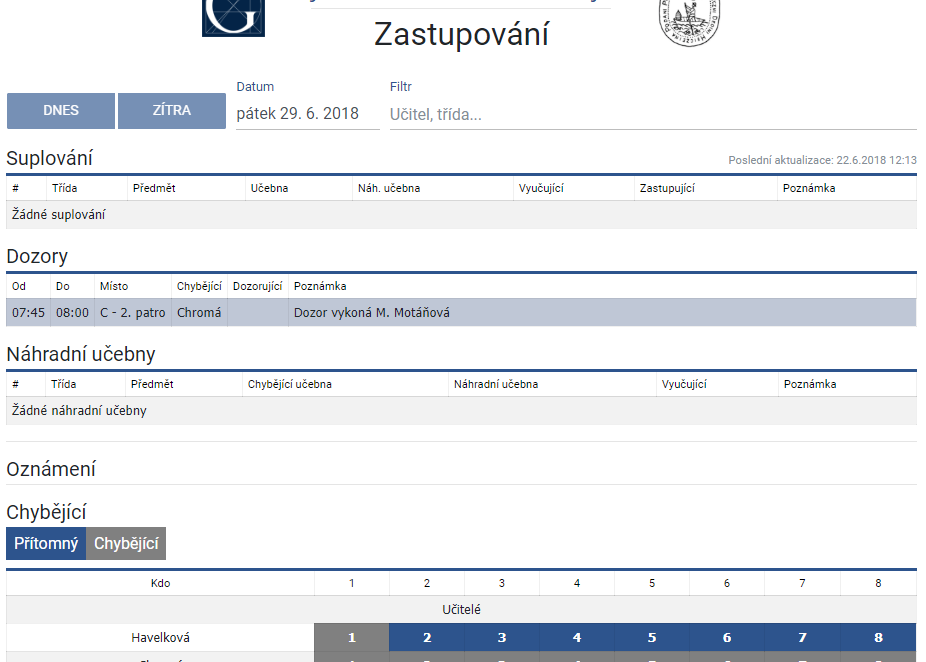

Úvod
Pro své aplikace používám převážně následující technologie:
Projekty

Zastupování
Efektivní informace o změnách v rozvrhu s možností filtrování záznámů podle subjektu.
Zastupování
Efektivní informace o změnách v rozvrhu s možností filtrování záznámů podle subjektu.
Zastupování
Efektivní informace o změnách v rozvrhu s možností filtrování záznámů podle subjektu.